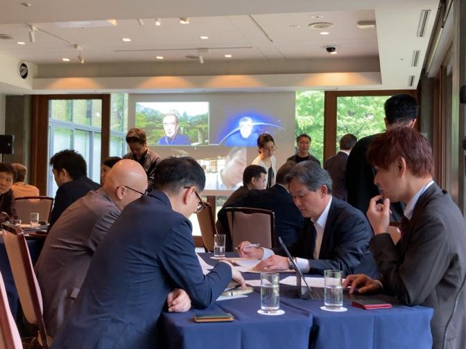

Consortium Program
1年間のプログラム
単なる勉強会ではありません。異業種の経営者・経営企画担当者が、身体的な体験と深い対話を通じて、自社の経営OSをアップデートする実践の場です。
Field Trip
フィールドトリップ
喜界島のサンゴ礁生態系、バリ島ウブドの伝統社会、先端テクノロジー企業を訪問。文献では得られない身体的理解を獲得します。

Guest Session
ゲストセッション
脳科学、人類学、経営学、生態系科学の最前線の研究者を招き、SINIC理論と最新の学術知見を接続します。

Cross-Industry Dialogue
異業種対話
製造業、食品、IT、金融、化粧品…業種を超えた対話から、自社単独では到達しえない認識の変容が生まれます。

Technology Session
技術セッション
参加企業の先端技術に触れ、SINIC理論が描く「自然社会」への技術の貢献可能性を体感的に探求します。